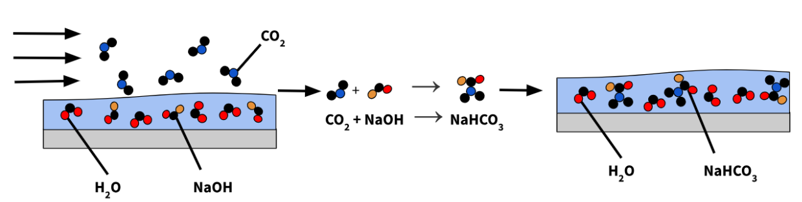

Carbon Capture
My mechanical engineering senior capstone project focused on devloping a novel carbon capture device for a company called Carbon Blade.
A brief synposis of the project from the public UCSD MAE Senior Capstone Wesbite: Source
Technologies aimed at reducing global atmospheric carbon dioxide concentrations have grown more popular in recent years, but high capital costs hinder implementation. Our project developed a passive carbon capture system compatible with Carbon Blade’s CAPTUS system, a compact carbon removal unit powered by onboard renewable energy. This Direct Air Contactor requires less energy and is more cost effective than large-scale facilities, while promising competitive capture rates.
The idea behind the project was to utlize direct air capture of carbon dioxide via a sodium hydroxide (NaOH) solvent. The system was intended to be mostly passive, with wind and renewable energy doing some work to run the device.
{kind=link}

A schematic showing the carbon capture process. Water containing a sodium hydroxide solvent reacts with carbon dioxide in the air passing by overhead. The carbon dioxide diffuses into the solvent and they react to form sodium bicarbonate. Then, the water with the sodium bicarbonate is removed from the system and fed into other processes that Carbon Blade developed.
I cannot share most of the details of the design publicly, but I can provide more information about the project methods and skills. My team and I developed a design that was novel for direct air capture devices. The main constraints behind the design was the required carbon dioxide sequestration rate and the diffusion rate of carbon dioxide into the solvent. We designed the device using CAD, simulated fluid flow using Ansys, build a full prototype, and tested the device for performance.
Skills & Methods:
- Computer-Aided Design: SolidWorks
- Computer-Aided Design: Fusion 360 (design modeling, manufacturing)
- Ansys Fluent: Internal Flow: Water/Solvent
- Ansys Fluent: External Flow: Air
- CNC Router: Plastic Component Fabrication
- Design for Manufacturing
- Material Selection & Evaluation: Metals & Plastics
- MATLAB: Testing Performance Analysis
- MATLAB: Passive Direct Air Capture Theory & Performance Criteria
Overall, the project provided valuable experience tackling a real-world, urgent problem in a start-up business environment. My team and I encountered and overcame numerous unexpected challenges, sucessfully delivering a working prototype after ~15 weeks of total project time and ~3 weeks of dedicated prototyping and testing time.